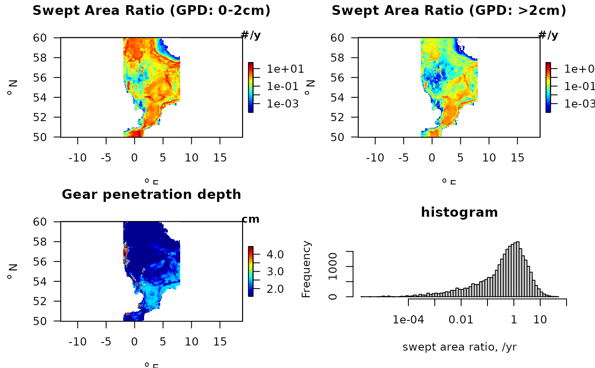

Swept-area ratios in the Northsea, OSPAR data.
SARdata.RdSAR has average swept area ratios (2009-2020) for the Northsea (long [-2, 8]; lat [50, 60]), with resolution of 0.05 dg, (source: OSPAR).
Format
**
SAR** is a list with 5 items.lon, x, a
vector(201 elements) with the longitudes (WGS84), dgE.lat, y, a
vector(201 elements) with the latitudes (WGS84), dgN.sar, a
matrixof dimensions (201 x 201) with annual swept area ratios for the surface (0-2cm).subsar, a
matrixof dimensions (201 x 201) with annual swept area ratios for the subsurface (>2cm).gpd, a
matrixof dimensions (201 x 201) with estimated gear penetration depths ([cm]).
Data source: OSPAR (ICES, 2022)
See also
Traits_nioz for trait data from package Btrait.
MWTL for density data from package Btrait.
Details
Original data in SAR were compiled by ICES upon request by OSPAR.
These data are based on relevant VMS and logbook data. Several Quality Checks were undertaken on the full VMS dataset to produce an overview QC report. All R scripts and SQL code used to access and process the VMS data are available on GitHub (https://github.com/ices-eg/wg_WGSFD).
The full data set comprised sar, and subsar data from 2009 till 2020, and from [-43.675, 43.7250 dg E] and [36.02, 81.72 dg N].
From these data, yearly averages were estimated, and the range restricted to be within [-2, 8 dgE] & [50, 60 dg N].
Mean gear penetration depth was estimated based on the metiers:
The metiers are Aggregated into beam trawl (TBB), dredge (DRB), demersal seine (SN), and otter trawl (OT), based on the metier layers: OT_CRU, OT_DMF, OT_MIX, OT_MIX_CRU, OT_MIX_DMF_BEN, OT_MIX_DMF_PEL, OT_MIX_CRU_DMF, OT_SPF, TBB_CRU, TBB_DMF, TBB_MOL, DRB_MOL, SDN_DMF, SSC_DMF.
The gear penetration depths used were the mean values over sand and muddy sediments:
in sand: 3.5, 1.1, 1.1, 1.9 cm for DRB, OT, SN, TBB respectively
in mud : 5.4, 2.0, 2.0, 3.2 cm for DRB, OT, SN, TBB respectively
average (used here): 4.45, 1.55, 1.55, 2.55 cm for DRB, OT, SN, TBB respectively
References
(older version:)
ICES Technical Service, Greater North Sea and Celtic Seas Ecoregions, 29 August 2018 sr.2018.14 Version 2: 22 January 2019 https://doi.org/10.17895/ices.pub.4508 OSPAR request on the production of spatial data layers of fishing intensity/pressure.
Examples
##-----------------------------------------------------
## Show contents of the fishing data set
##-----------------------------------------------------
metadata(SAR)
#> $source
#> [1] "OSPAR, ICES"
#>
#> $data
#> name
#> 1 lon
#> 2 lat
#> 3 sar
#> 4 subsar
#> 5 gpd
#> description
#> 1 longitude
#> 2 latitude
#> 3 annual swept area ratio (2009-2020), sum of beam, otter trawl, dredge, seine
#> 4 annual swept area ratio (2009-2020) for the subsurface (> 2cm)
#> 5 estimated gear penetration depths
#> units
#> 1 dgE
#> 2 dgN
#> 3 /yr
#> 4 /yr
#> 5 cm
#>
head(SAR$sar)
#> [,1] [,2] [,3] [,4] [,5] [,6] [,7]
#> [1,] 0.07355834 0.05672829 0.1497539 0.6018105 0.22252551 0.35871873 0.64379586
#> [2,] 0.03630100 0.06368219 0.1966831 0.4611358 0.13567970 0.17296712 0.16653411
#> [3,] 0.02569979 0.06158300 0.2104637 0.4053977 0.16444175 0.06257311 0.04984419
#> [4,] 0.05449316 0.07933812 0.2012643 0.3307130 0.12098146 0.06695588 0.05641331
#> [5,] 0.05543249 0.12613440 0.2759151 0.3164142 0.13037950 0.08929022 0.03571426
#> [6,] 0.02661347 0.08064582 0.2257001 0.3202876 0.08150474 0.02731249 0.01988160
#> [,8] [,9] [,10] [,11] [,12] [,13]
#> [1,] 0.32105055 0.005446512 0.002812023 8.353587e-04 NA NA
#> [2,] 0.22738460 0.014554284 NA 2.831444e-05 7.363268e-05 NA
#> [3,] 0.12487334 0.026673355 0.004770397 7.618951e-03 9.979359e-04 0.0002736907
#> [4,] 0.09652301 0.052986573 0.013579033 2.947101e-03 1.567850e-03 0.0007137046
#> [5,] 0.05735910 0.030358087 0.024841832 4.739914e-03 2.805902e-03 0.0011937296
#> [6,] 0.02804224 0.042199241 0.039153584 1.309945e-02 3.033610e-03 0.0012795559
#> [,14] [,15] [,16] [,17] [,18] [,19] [,20] [,21] [,22] [,23]
#> [1,] NA NA NA NA NA NA NA NA NA NA
#> [2,] NA NA NA NA NA NA NA NA NA NA
#> [3,] 9.334784e-06 NA NA NA NA NA NA NA NA NA
#> [4,] 9.334784e-06 NA NA NA NA NA NA NA NA NA
#> [5,] 6.389477e-06 NA NA NA NA NA NA NA NA NA
#> [6,] 3.700429e-06 1.684822e-06 NA NA NA NA NA NA NA NA
#> [,24] [,25] [,26] [,27] [,28] [,29] [,30] [,31] [,32] [,33] [,34] [,35]
#> [1,] NA NA NA NA NA NA NA NA NA NA NA NA
#> [2,] NA NA NA NA NA NA NA NA NA NA NA NA
#> [3,] NA NA NA NA NA NA NA NA NA NA NA NA
#> [4,] NA NA NA NA NA NA NA NA NA NA NA NA
#> [5,] NA NA NA NA NA NA NA NA NA NA NA NA
#> [6,] NA NA NA NA NA NA NA NA NA NA NA NA
#> [,36] [,37] [,38] [,39] [,40] [,41] [,42] [,43] [,44] [,45] [,46] [,47]
#> [1,] NA NA NA NA NA NA NA NA NA NA NA NA
#> [2,] NA NA NA NA NA NA NA NA NA NA NA NA
#> [3,] NA NA NA NA NA NA NA NA NA NA NA NA
#> [4,] NA NA NA NA NA NA NA NA NA NA NA NA
#> [5,] NA NA NA NA NA NA NA NA NA NA NA NA
#> [6,] NA NA NA NA NA NA NA NA NA NA NA NA
#> [,48] [,49] [,50] [,51] [,52] [,53] [,54] [,55] [,56] [,57] [,58] [,59]
#> [1,] NA NA NA NA NA NA NA NA NA NA NA NA
#> [2,] NA NA NA NA NA NA NA NA NA NA NA NA
#> [3,] NA NA NA NA NA NA NA NA NA NA NA NA
#> [4,] NA NA NA NA NA NA NA NA NA NA NA NA
#> [5,] NA NA NA NA NA NA NA NA NA NA NA NA
#> [6,] NA NA NA NA NA NA NA NA NA NA NA NA
#> [,60] [,61] [,62] [,63] [,64] [,65] [,66] [,67] [,68] [,69] [,70] [,71]
#> [1,] NA NA NA NA NA NA NA NA NA NA NA NA
#> [2,] NA NA NA NA NA NA NA NA NA NA NA NA
#> [3,] NA NA NA NA NA NA NA NA NA NA NA NA
#> [4,] NA NA NA NA NA NA NA NA NA NA NA NA
#> [5,] NA NA NA NA NA NA NA NA NA NA NA NA
#> [6,] NA NA NA NA NA NA NA NA NA NA NA NA
#> [,72] [,73] [,74] [,75] [,76] [,77] [,78] [,79] [,80] [,81] [,82] [,83]
#> [1,] NA NA NA NA NA NA NA NA NA NA NA NA
#> [2,] NA NA NA NA NA NA NA NA NA NA NA NA
#> [3,] NA NA NA NA NA NA NA NA NA NA NA NA
#> [4,] NA NA NA NA NA NA NA NA NA NA NA NA
#> [5,] NA NA NA NA NA NA NA NA NA NA NA NA
#> [6,] NA NA NA NA NA NA NA NA NA NA NA NA
#> [,84] [,85] [,86] [,87] [,88] [,89] [,90] [,91] [,92] [,93] [,94] [,95]
#> [1,] NA NA NA NA NA NA NA NA NA NA NA NA
#> [2,] NA NA NA NA NA NA NA NA NA NA NA NA
#> [3,] NA NA NA NA NA NA NA NA NA NA NA NA
#> [4,] NA NA NA NA NA NA NA NA NA NA NA NA
#> [5,] NA NA NA NA NA NA NA NA NA NA NA NA
#> [6,] NA NA NA NA NA NA NA NA NA NA NA NA
#> [,96] [,97] [,98] [,99] [,100] [,101] [,102] [,103] [,104] [,105]
#> [1,] NA NA NA NA NA NA NA NA NA NA
#> [2,] NA NA NA NA NA NA NA NA NA NA
#> [3,] NA NA NA NA NA NA NA NA NA NA
#> [4,] NA NA NA NA NA NA NA NA NA NA
#> [5,] NA NA NA NA NA NA NA NA NA NA
#> [6,] NA NA NA NA NA NA NA NA NA NA
#> [,106] [,107] [,108] [,109] [,110] [,111]
#> [1,] NA NA NA NA NA NA
#> [2,] NA NA NA NA NA NA
#> [3,] NA NA NA NA NA NA
#> [4,] NA NA NA NA NA NA
#> [5,] NA NA NA NA NA NA
#> [6,] 0.001395454 0.001395454 0.001395454 0.001395454 0.001395454 0.001480981
#> [,112] [,113] [,114] [,115] [,116] [,117]
#> [1,] NA NA NA NA NA 0.001617847
#> [2,] NA NA NA NA NA 0.047768506
#> [3,] NA 0.0002330433 0.001678845 0.02099453 0.15610526 0.079671756
#> [4,] NA 0.0006400348 0.002344201 0.02282724 0.15546720 0.160453291
#> [5,] NA 0.0011247206 0.003668732 0.01402367 0.03630049 0.193847084
#> [6,] 0.001495097 0.0028836160 0.008235741 0.02582399 0.06159364 0.040304478
#> [,118] [,119] [,120] [,121] [,122] [,123]
#> [1,] 0.07304697 0.44021948 1.98434901 3.405527918 1.030526240 0.011922190
#> [2,] 1.27821036 0.38978120 1.07662488 1.279880402 0.295439636 0.002876324
#> [3,] 1.52540665 0.09378295 0.09001383 0.131445823 0.054195369 0.068659507
#> [4,] 0.45381618 0.01785700 0.02177349 0.111620474 0.118106275 0.124670321
#> [5,] 0.08486314 0.02998075 0.09236747 0.106241503 0.011702458 0.011685715
#> [6,] 0.02412992 0.02535896 0.06110640 0.007122626 0.006381908 0.004091756
#> [,124] [,125] [,126] [,127] [,128] [,129]
#> [1,] 0.02828109 0.011392372 0.2248566 0.02410316 0.04677145 0.08534949
#> [2,] 0.04606827 0.004506055 0.1024898 0.08535430 0.68617273 0.63247236
#> [3,] 0.06376417 0.066428773 0.2278492 0.20889534 0.51448982 0.63385658
#> [4,] 0.16163564 0.280085237 0.1102745 0.11692688 0.24272525 0.24991360
#> [5,] 0.10275582 0.108441742 0.1039444 0.08547157 0.15705706 0.15013021
#> [6,] 0.09545881 0.081289727 0.1248917 0.04221988 0.35753236 0.41212237
#> [,130] [,131] [,132] [,133] [,134] [,135] [,136]
#> [1,] 0.3399883 0.66506740 1.4302590 2.0342487 1.1778633 0.4593690 0.3279271
#> [2,] 0.4884086 0.51365446 0.3195583 0.5047549 0.5291371 0.5358062 0.5574770
#> [3,] 0.1837254 0.19358479 0.1262645 0.4933666 0.5910319 0.5291639 0.6763279
#> [4,] 0.1183519 0.12626584 0.2528135 0.4576485 0.7282994 0.6313081 0.6620539
#> [5,] 0.1175555 0.07077433 0.2453625 0.3743953 0.5939699 0.3928658 0.5135145
#> [6,] 0.2367568 0.09415880 0.1531609 0.3688490 0.5486929 0.3761316 0.4130405
#> [,137] [,138] [,139] [,140] [,141] [,142] [,143]
#> [1,] 0.4084665 0.4988324 0.34842817 0.37613823 0.07569183 0.10410347 0.21888751
#> [2,] 0.3913539 0.2765731 0.10050446 0.07740681 0.07725576 0.16813780 0.09150634
#> [3,] 0.4618348 0.2909847 0.07870975 0.08665922 0.13812622 0.10187294 0.14615386
#> [4,] 0.6118645 0.5858445 0.18278052 0.04590163 0.17693480 0.06020461 0.04798960
#> [5,] 0.5780704 0.5543521 0.11144847 0.12533147 0.17657677 0.20791375 0.10387396
#> [6,] 0.5517691 0.5416135 0.16020831 0.15978346 0.16041183 0.11962563 0.15773328
#> [,144] [,145] [,146] [,147] [,148] [,149]
#> [1,] 0.01982853 0.005520184 0.003595411 NA NA NA
#> [2,] 0.17789184 0.072623066 0.046698590 0.01064459 NA NA
#> [3,] 0.12549595 0.219466580 0.249622367 0.04528605 0.10550789 0.04216278
#> [4,] 0.04994906 0.262073012 0.530900501 0.18699444 0.03851945 0.04597248
#> [5,] 0.09120993 0.264268456 0.949973102 0.67489747 0.11079241 0.03274443
#> [6,] 0.13177562 0.133900482 1.016936970 0.36163392 0.06103634 0.10963396
#> [,150] [,151] [,152] [,153] [,154] [,155]
#> [1,] NA NA NA NA NA NA
#> [2,] NA NA NA NA NA NA
#> [3,] 0.006471524 0.001773478 0.002509765 0.006611868 0.02667068 0.04742406
#> [4,] 0.053110439 0.052822350 0.057968681 0.079299594 0.04929230 0.08501493
#> [5,] 0.034405680 0.040634169 0.128979538 0.151013895 0.04926767 0.15072577
#> [6,] 0.165735353 0.384165173 0.660269207 0.105657717 0.18837125 0.21005701
#> [,156] [,157] [,158] [,159] [,160] [,161] [,162]
#> [1,] 0.39999949 0.5992939 3.038794 1.0670114 1.0132200 0.8130582 2.3466077
#> [2,] 0.30104551 0.2285435 2.621566 0.6588534 0.5197008 0.5486655 1.5966809
#> [3,] 0.09066079 0.2405967 1.733216 0.6366253 0.3632092 0.3664714 1.2357486
#> [4,] 0.18525517 0.1533045 1.853631 0.3450448 0.6661862 1.1177300 1.4599925
#> [5,] 0.24586002 0.2324160 1.696697 0.4471415 1.4042690 2.4284836 1.5288962
#> [6,] 0.40411737 0.7152467 1.161685 0.6576639 0.2740280 0.3270256 0.2167671
#> [,163] [,164] [,165] [,166] [,167] [,168] [,169]
#> [1,] 0.5221290 0.21506483 0.3079500 0.3125794 2.334138 2.402774 1.8156848
#> [2,] 0.3433948 0.28315205 0.9273503 1.3144002 3.081724 1.276094 0.6881164
#> [3,] 0.2797028 0.32007018 0.7768220 1.6917669 4.325854 1.128580 0.9668248
#> [4,] 0.3092819 0.29125417 0.5147301 1.5857105 4.386220 2.506680 2.1987045
#> [5,] 1.0149546 0.26930531 0.9840226 2.5106678 4.968257 2.852783 2.9137669
#> [6,] 0.3967160 0.07090784 0.5135612 1.6492344 3.602709 2.139263 2.7320919
#> [,170] [,171] [,172] [,173] [,174] [,175] [,176]
#> [1,] 0.6148247 3.942466 4.516277 1.070486 0.7187071 0.4147135 0.1859261
#> [2,] 1.9612479 5.302816 2.432169 1.757003 1.6649427 2.1923957 0.3753196
#> [3,] 2.8120756 3.604290 2.438323 2.569170 1.2945678 3.9879742 0.5126684
#> [4,] 3.9777110 3.343434 1.680504 1.785998 3.0777081 3.6372544 0.4387463
#> [5,] 3.1838492 5.063573 3.535059 4.997079 4.5182558 3.2338218 0.7544276
#> [6,] 3.5510947 3.220385 2.848223 3.785357 6.3109653 2.2930969 0.6838632
#> [,177] [,178] [,179] [,180] [,181] [,182] [,183]
#> [1,] 0.2103824 0.07698863 0.6497138 1.4459323 1.989769 0.2035887 0.1766528
#> [2,] 0.1390448 0.18604250 0.4501682 1.6986952 3.016415 0.2712330 0.2504606
#> [3,] 0.1475360 0.08925753 0.4576098 4.2174294 7.148881 0.5552498 0.3507430
#> [4,] 0.2452317 0.23231092 0.6079510 2.4405742 3.806941 1.5524609 0.2407287
#> [5,] 0.1933412 0.43547296 0.4865997 1.5145205 2.321796 2.3970260 0.3883675
#> [6,] 0.3800396 0.18468391 0.3096804 0.6177013 1.497211 2.3580506 1.7710129
#> [,184] [,185] [,186] [,187] [,188] [,189] [,190]
#> [1,] 0.03996595 0.2647272 0.2439296 0.1808848 0.03104670 0.09392943 0.04945235
#> [2,] 0.16760855 0.4907478 0.3206280 0.3866034 0.09801153 0.47429832 0.49182088
#> [3,] 0.26122190 0.2831881 0.5349191 0.4758629 0.40308761 0.47122279 0.58066268
#> [4,] 0.63298755 0.2651117 0.4285452 0.3798058 0.33815410 0.05190307 0.11595668
#> [5,] 0.50136473 0.3508988 0.3144355 0.2261707 0.20815741 0.12581366 0.06843053
#> [6,] 0.41560089 0.3613185 0.3195144 0.2541692 0.26766056 0.27017139 0.04243351
#> [,191] [,192] [,193] [,194] [,195] [,196] [,197]
#> [1,] 0.11668879 0.39866047 0.96475855 0.4350706 1.1154212 2.315016 3.037812
#> [2,] 0.40685518 0.22832098 0.48337934 1.1429327 1.1350680 2.738489 2.044323
#> [3,] 0.21455533 0.21171826 0.21485333 0.4067487 1.6750749 2.412246 2.546477
#> [4,] 0.04067587 0.03958428 0.09365969 0.2482267 1.2809039 2.779279 3.668582
#> [5,] 0.04663228 0.01185431 0.33255401 0.3465936 0.7669678 2.683526 3.837631
#> [6,] 0.02294409 0.06205245 0.18143525 0.2741900 0.6511125 1.764170 2.788055
#> [,198] [,199] [,200] [,201]
#> [1,] 3.412755 6.121109 3.916296 1.602067
#> [2,] 3.471101 5.132736 4.197838 2.050420
#> [3,] 4.003296 5.009741 4.358913 2.303894
#> [4,] 5.088443 3.157755 3.196467 4.526087
#> [5,] 3.490861 3.218464 2.605377 7.947936
#> [6,] 1.749728 1.351854 2.491624 13.625810
##-----------------------------------------------------
## The fishing data - asp sets the good aspect ratio
##-----------------------------------------------------
# Aspect ratio of the graph
asp <- 1/cos((mean(SAR$lat) * pi)/180)
par(mfrow=c(2,2))
with (SAR, image2D(x=lon, y=lat, z=sar,
xlab = expression(""^o~E),
ylab = expression(""^o~N),
clab = "#/y",
main = "Swept Area Ratio (GPD: 0-2cm)",
log="c", clim=c(0.0001,50),
colkey=list(length=0.5, width=0.5),
asp=asp, las=1)
)
with (SAR, image2D(x=lon, y=lat, z=subsar,
xlab = expression(""^o~E),
ylab = expression(""^o~N),
clab = "#/y",
main = "Swept Area Ratio (GPD: >2cm)",
log="c", clim=c(0.0001,50),
colkey=list(length=0.5, width=0.5),
asp=asp, las=1)
)
with (SAR, image2D(x=lon, y=lat, z=gpd,
xlab = expression(""^o~E),
ylab = expression(""^o~N),
clab = "cm",
main = "Gear penetration depth",
colkey=list(length=0.5, width=0.5),
asp=asp, las=1)
)
hist (log10(SAR$sar), n=100, axes=FALSE,
xlab = "swept area ratio, /yr",
main = "histogram")
axis(side=1, at=-4:2, labels=10^(-4:2))
axis(side=2)
